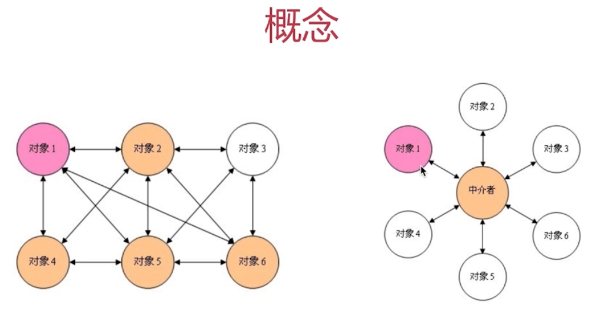

各业务代码直接不直接关联，通过中介者进行沟通。如买房和卖房客之间通过中介进行买卖
定义一个中介对象来封装一系列对象之间的交互，使原有对象之间的耦合松散，且可以独立地改变它们之间的交互。中介者模式又叫调停模式，它是迪米特法则的典型应用。
中介者模式是一种对象行为型模式，其主要优点如下。
类之间各司其职，符合迪米特法则。
降低了对象之间的耦合性，使得对象易于独立地被复用。
将对象间的一对多关联转变为一对一的关联，提高系统的灵活性，使得系统易于维护和扩展。
其主要缺点是：中介者模式将原本多个对象直接的相互依赖变成了中介者和多个同事类的依赖关系。
当同事类越多时，中介者就会越臃肿，变得复杂且难以维护。
